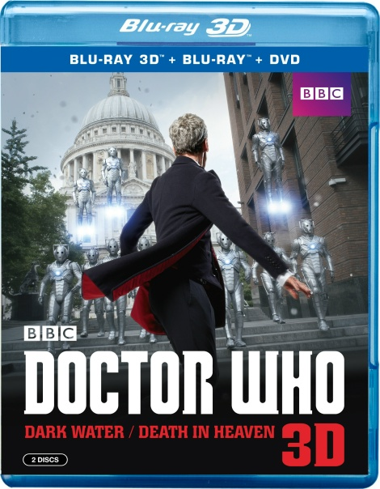
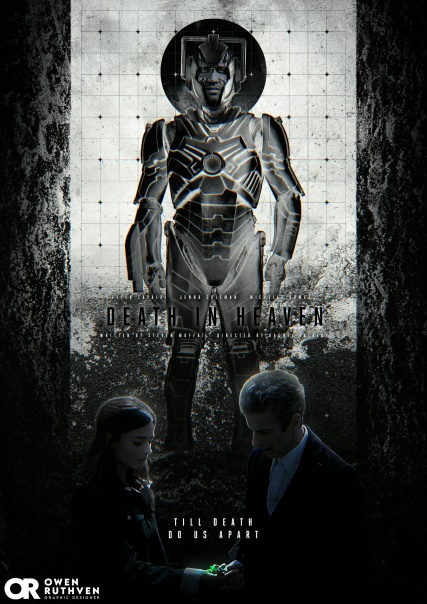

Весь 8-й сезон (12 серий)
Весь 8-й сезон (12 серий) |
Death in Heaven
Дата выхода: 8 ноября 2014
Формат: 56-минутный эпизод
  |
| Варианты озвучек: | * Разные: смотрите по инструкции |
|---|---|
| Скачивание и просмотр: |
Киберлюди выходят на улицы Лондона, и против старых врагов объединяются старые друзья, а Доктор взлетает в новой для себя, поразительной роли. Может ли могущественный UNIT сдержать Мисси? Доктор сталкивается со своим самым грандиозным заданием, и ещё до победы должны быть принесены жертвы.
